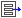

-
Before generating any other traffic on your network, use the packet
level view (ethereal) to analyze packets seen by eth0 of the 'borderrouter' host
when you ping from that host to eth0 on the 'isprouter'. Record the MAC
addresses and Ethernet type of the first 8 packets below.
Write MAC addresses as strings of hex values with no colons or dashes.
Specify etherType as either'ARP' or 'IP'.
-
Staying in the network view, toggle the  button to see the
routing tables so far in the network. You will notice two types of routing
entries in the table: local entries , which describe paths to
hosts on subnets directly connected to the router, and
non-local entries
which specify a directly connected next-hop as a means to reach a remote
network.
Ping again from 'borderrouter' to 'isprouter" and record what routing
entries on each host where used to forward the ping and its reply packet.
Specify a non-existant next-hop as '0.0.0.0', so that each entry except for the
interface name is a simple "dotted-quad" IP address (e.g., 12.2.1.1 ).
-
Now let's configure additional routes so that 'isprouter' and 'router3' can
communicate, even though they are not directly connected. We will use a /31
(ie: a prefix containing two IP address) for the subnet between the routers.
In this case, we choose 177.66.55.2/31 . Configure eth2 on 'borderrouter' to
be 177.66.55.2 and eth0 on 'router3' to be 177.66.55.3 . Now, add the routes
needed so that all three hosts can reach at least one interface on the other
host.
Hint: You should add two routes to the routing table of 'router3',
one route to 'borderrouter', and no routes to 'isprouter'. Use either the
property view of each host's IPRouteLookup component, or the command line
to add routes (see
student resources page for helpful details).
Now ping from 'router3' to 'isprouter'. Using the network view, what are
the four routing table entries used to forward the Echo request and reply?
List them in order of use (slowing the router with the speed bar will help).
-
While pinging again, zoom into router 'borderrouter' to view the
behavior of a router that is purely forwarding traffic.
What are the names of the three components inside the router that perform
the IP-specific forwarding functionality? List them in the order they process
a forwarded packet.
Component #1
Component #2
Component #3
What "layer" does Ethernet operate at?
What "layer" does IP operate at?
What "layer" does ARP operate at?
What "layer" does the ICMP (used to implement ping) operate at?
-
Continue the same ping sequence and use the packet analyzer to look at packets
being forwarded through 'borderrouter'. By looking at the 'Iface' column,
find two entries that correspond to a single IP packet entering and then
exiting the router. Below, select all fields in the ethernet and
IP headers that change when 'borderrouter' forwarded the packet from eth2 to
eth0 (or vice versa).
Ethernet Header:
src address:
dest address:
ethertype:
IP Header:
version:
header len:
ToS bits:
total len:
identification:
flags & frag offset:
time-to-live:
protocol:
header checksum:
src address:
dest address:
-
While no bridges exist in this network, select which of those fields
would also be changed by a switch/bridge, if, for example, there was a
bridge between 'borderrouter' and hosts in the engineering subnet.
Ethernet Header:
src address:
dest address:
ethertype:
IP Header:
version:
header len:
ToS bits:
total len:
identification:
flags & frag offset:
time-to-live:
protocol:
header checksum:
src address:
dest address:
-
While running ethereal on 'borderrouter', use the 'httpget' command-line
utility to generate a TCP packet from 'isprouter' to the 177.66.55.3
interface on 'router3' (the TCP packet will be dropped at 'router3' but
that's ok). Use control-C to kill 'httpget' after a few TCP packets have been sent.
Now send a sequence of pings from 'isprouter' to
that same IP address on 'router3'. Looking at packets on the eth2 interface of 'borderrouter' only,
what fields in the IP header are different between the ICMP packet
and the TCP packet?
IP Header:
version:
header len:
ToS bits:
total len:
identification:
flags & frag offset:
time-to-live:
protocol:
header checksum:
src address:
dest address:
Full Name:
Username: